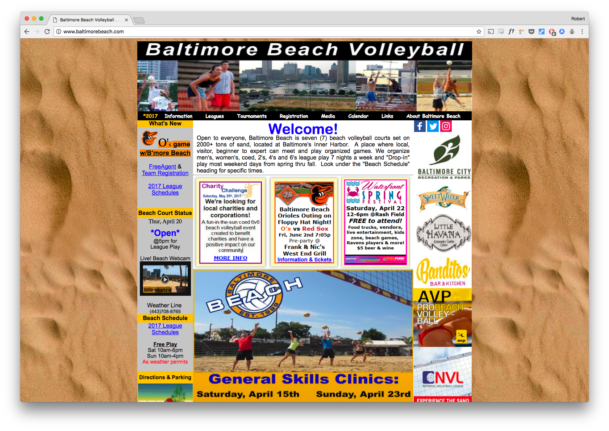

- Brief:
- Assess the existing Baltimore Beach Volleyball website and propose a redesign in the form of an interactive prototype that addresses stakeholder & user needs.
- Role:
- UX Designer
- Team:
- Isaac Gertman, Project Manager
- Yao Adantor, Strategist
- Kaitlin Bensley, IA
Cum sociis natoque penatibus et magnis dis parturient montes, nascetur ridiculus mus. Aenean eu leo quam. Pellentesque ornare sem lacinia quam venenatis vestibulum. Sed posuere consectetur est at lobortis. Cras mattis consectetur purus sit amet fermentum.
Curabitur blandit tempus porttitor. Nullam quis risus eget urna mollis ornare vel eu leo. Nullam id dolor id nibh ultricies vehicula ut id elit.
Etiam porta sem malesuada magna mollis euismod. Cras mattis consectetur purus sit amet fermentum. Aenean lacinia bibendum nulla sed consectetur.
Research
Aenean lacinia bibendum nulla sed consectetur. Etiam porta sem malesuada magna mollis euismod. Fusce dapibus, tellus ac cursus commodo, tortor mauris condimentum nibh, ut fermentum massa.
Site Analytics
87% of users navigate directly to the homepage.
52.6% of users spend less than 30 seconds on the site.
Over 60% of users access the site via mobile.
The homepage is the area of greatest concern. Given user behavior, we must resolve the clarity and presentation of information so that players are able to quickly access only the most vital information. More, the new website should be responsive to accomodate users on the go.
Stakeholder Interviews
Owner Needs: Updated design, nice pictures, clear way for users to get involved, few complaints (user error)
Content Manager Needs: A CMS that works, Clean database administration in MSSQL—without having to remake everything in MySQL, better serve the questions of new players
Employee Needs: An easier to use site, nice pictures, clearer and more refined typographic hierarchy, clearer IA
User Personas
The homepage is the area of greatest concern. Given user behavior, we must resolve the clarity and presentation of information so that players are able to quickly access only the most vital information. More, the new website should be responsive to accomodate users on the go.


Prototype
- Praesent commodo cursus magna, vel scelerisque nisl consectetur et.
- Donec id elit non mi porta gravida at eget metus.
- Nulla vitae elit libero, a pharetra augue.
Donec ullamcorper nulla non metus auctor fringilla. Nulla vitae elit libero, a pharetra augue.
Cras mattis consectetur purus sit amet fermentum. Sed posuere consectetur est at lobortis.
Conclusion
Cum sociis natoque penatibus et magnis dis parturient montes, nascetur ridiculus mus. Aenean eu leo quam. Pellentesque ornare sem lacinia quam venenatis vestibulum. Sed posuere consectetur est at lobortis. Cras mattis consectetur purus sit amet fermentum.
Curabitur blandit tempus porttitor. Nullam quis risus eget urna mollis ornare vel eu leo. Nullam id dolor id nibh ultricies vehicula ut id elit.
Etiam porta sem malesuada magna mollis euismod. Cras mattis consectetur purus sit amet fermentum. Aenean lacinia bibendum nulla sed consectetur.
Vivamus sagittis lacus vel augue laoreet rutrum faucibus dolor auctor. Duis mollis, est non commodo luctus, nisi erat porttitor ligula, eget lacinia odio sem nec elit. Morbi leo risus, porta ac consectetur ac, vestibulum at eros.